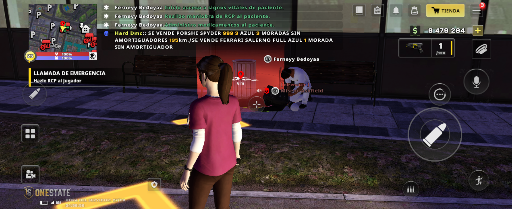

02
🫀 RCP con instructor
Presentar 3 evidencias de RCP, cada una con un instructor diferente y en distinta fecha y hora del servidor.
Misma pasión · Mayor responsabilidad
🔽 Seguí deslizando

Explicar el proceso con las macros, desde que sale del hospital hasta que regresa.

Presentar 3 evidencias de RCP, cada una con un instructor diferente y en distinta fecha y hora del servidor.

Se te preguntará en qué zonas no se puede hacer RCP.

Ingresá al mapa para descubrir si podés hacer RCP en cada punto de la ciudad.

Conocer las reglas de roleplay RP13, RP14 y RP16 y sus sanciones.

Resumen de los requisitos para bata azul.
Durante el examen de ascenso vas a tener que explicar el proceso completo de RCP, tal como lo haría un instructor bata azul con un bata verde.